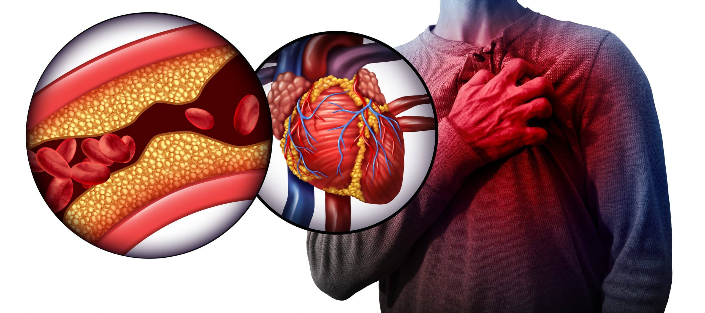
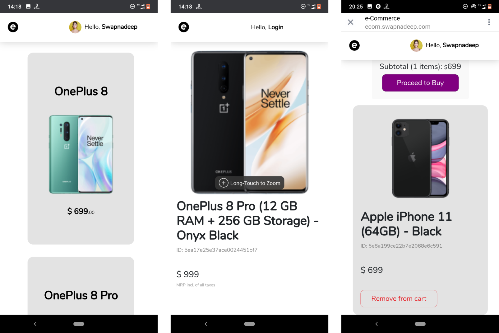
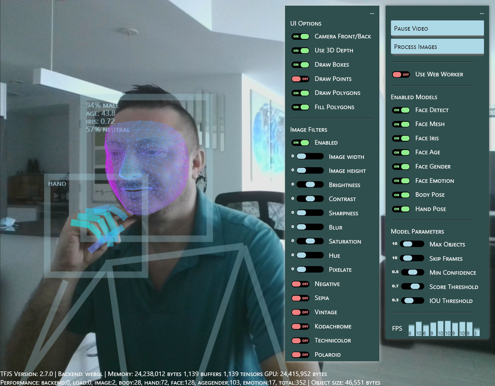

Developed an AI-based system to predict hypertension risk.
Employed Logistic Regression, SVM, KNN, Decision Tree, and Naive Bayes Classifiers to build a robust
prediction system, achieving an impressive accuracy rate of 89%.
Utilized Python with libraries like scikit-learn and pandas and found that 60% of patients in the dataset suffer
from high blood pressure, aiding in preventive healthcare measures.


Developed a smart platform facilitating entrepreneurs and investors in launching businesses and addressing
community needs. Implemented a robust web architecture using the Model-View-Controller (MVC) paradigm. Utilized EJS as
the template engine in the Node.js environment for dynamic content rendering. Integrated OpenAI API to offer personalized recommendations for investors, enhancing the value and
effectiveness of premium plans.

Tindog, tailored for dog lovers to find playdates for their pets. Developed a responsive and visually appealing website using HTML and CSS, ensuring compatibility across
various devices and screen sizes. Implemented interactive features using JavaScript to enhance user experience, such as profile cards and a
matching algorithm for connecting dogs. Demonstrated proficiency in web development technologies and the ability to recreate and adapt existing
projects.

Developed a comprehensive mobile store application as a semester project.
Implemented a RESTful API with CRUD operations to support features such as adding items to the cart,
purchasing, and more.
Built my first MERN Stack application, streamlining the development process and achieving a 15% project
timeline improvement.
Focused on creating a seamless user experience and efficient backend processes, resulting in a notable
reduction in development time.

Created a machine learning model for gender classification with high accuracy. Applied various algorithms, including Logistic Regression, SVM, and Decision Trees, to a diverse dataset. Utilized Python and libraries such as scikit-learn and pandas to preprocess data and optimize model performance, achieving reliable classification results for practical applications.